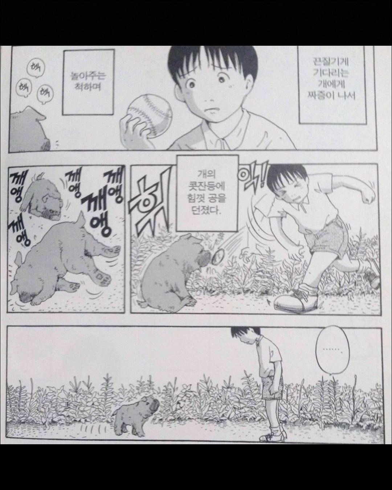
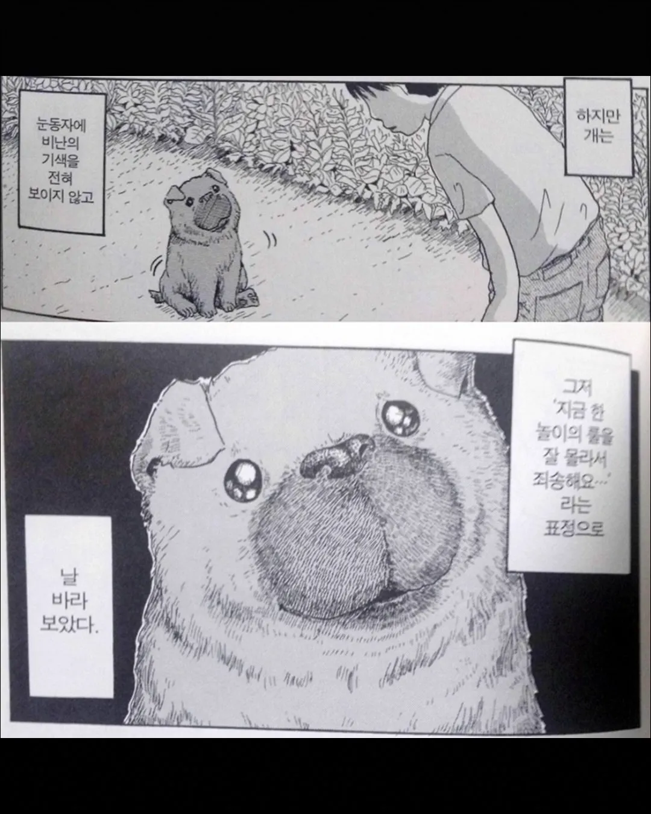

싸이코아냐
사교성 좋은 개들은 윌리엄스증후군을 앓는 사람들과 유전적인 유사성을 보인다는 연구결과가 나왔다.
윌리엄스증후군은 7번 염색체 이상으로 나타나는 발달장애로, 타인에게 공손하고 사교적이며 낯선 사람을 두려워하지 않는 특징이 있어 자폐증과 반대되는 특성이 있다.
띠옹 친근하게 구는거말곤 일반인이랑 다를게 없나
다운증후군에게 특유의 외모가 나타나듯이
윌리엄스증후군도 들창코같은 특유의 외모가 나타나고
학습장애가 수반됨
다운증후군은 지적장애
안타깝네
윌리엄스도 장애인가?
무슨 만화냐
지 좋아해서 쫄랑 쫄랑 따라오고 아무것도 잘못 안한 개에게 왜 저러는거임?
일본인이자나
애니까.
쉽게 질려하고 충동적이지.
저런애들을 교육시켜서 사회화시켜서 사람만드는게 어른들의 의무인거구.
왜 죄없는 동물을 괴롭힘...
아직 어려서 그런거라고 그린거겠지
개 괴롭히지 마라 시발롬아
주댕이 부랄같아서 징그러워
만져보고 싶지 않은가?
개는 '부랄같은 주둥이가 있어 죄송해요...'라는 표정으로 개붕이를 바라보았다.
어릴 때 문방구 앞에서 강아지 발을 실수로 밟음. 깨깽 하는거에 놀라서 막 미안해 미안해 했더니 그 이후 계속 날 졸졸 따라옴. 집까지 따라와서 데려갔더니 엄마한테 개혼남 ㅋㅋ 다음날 동네 아저씨한테 맡기고 억지로 떼어놨는데 아직도 종종 생각남
그거 친한척해서 경계심을 풀고 방심하는 틈타 암살하려는거임
어머님 아니였음 큰일날 뻔했네ㅋㅋ
도로롱콘v6")
불쌍해...
그야 안친근한 개는..
진짜 부담스러울정도로 사람좋아함.. 고양이만키우다가 개돌보게 되면 부담스러움ㅋㅋ
시발새끼